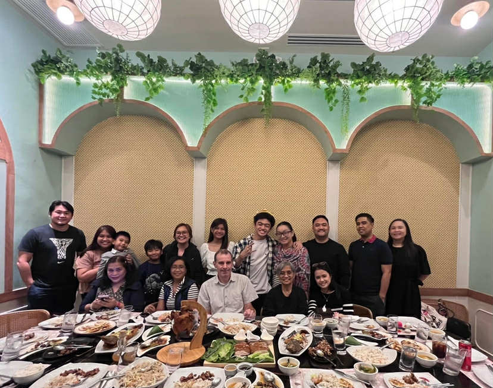
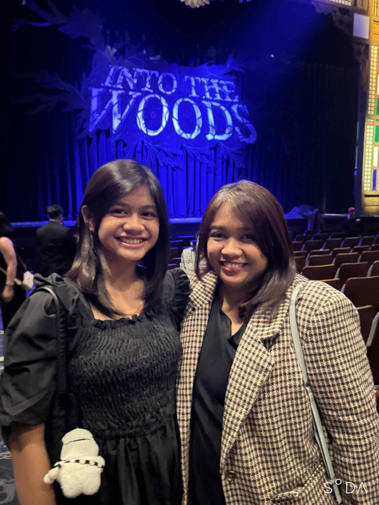
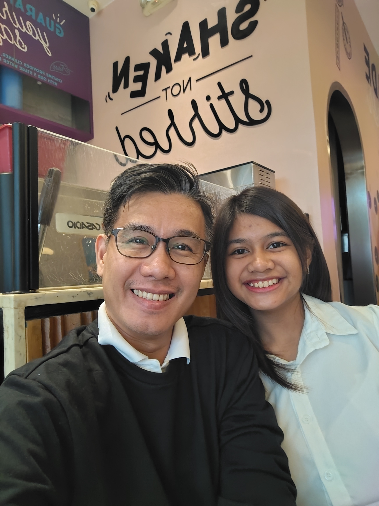
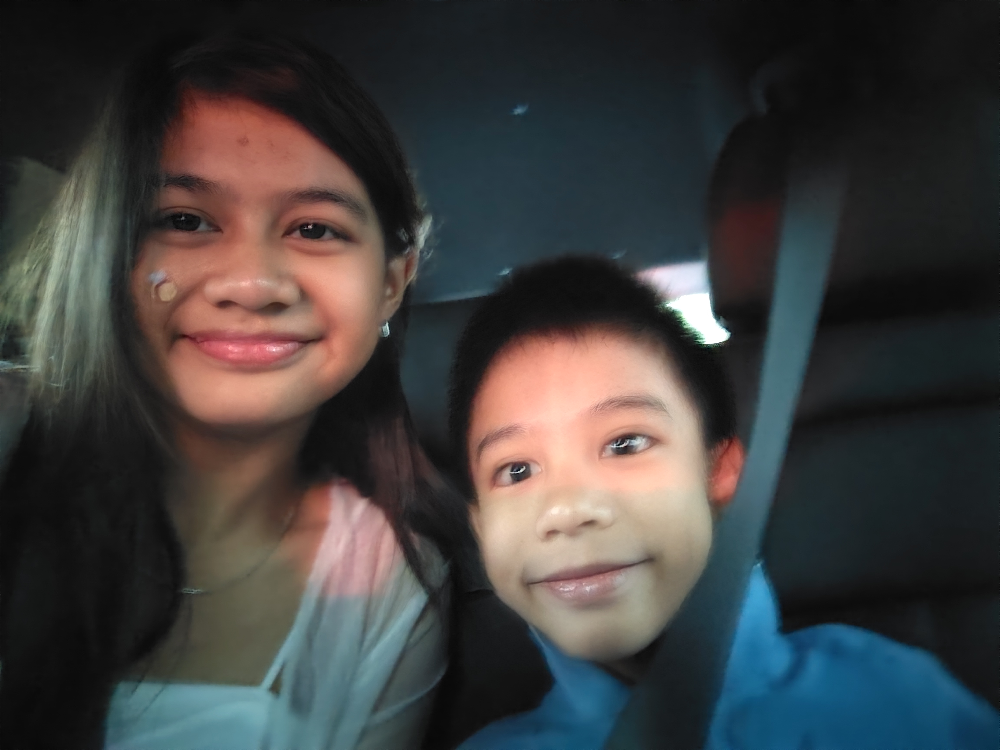
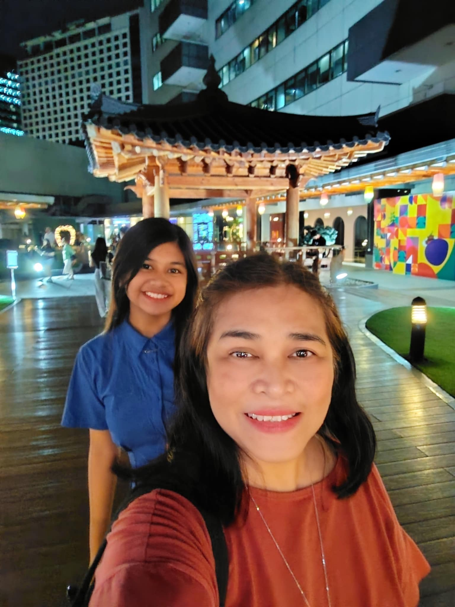
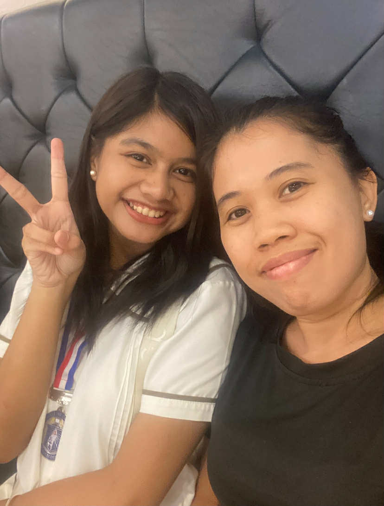
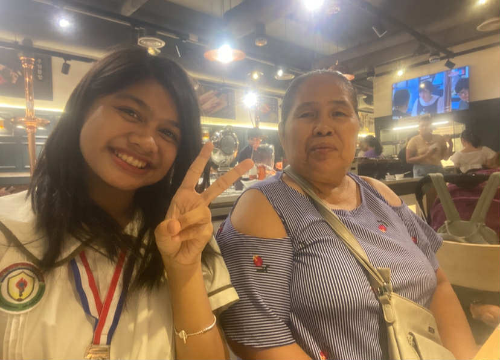
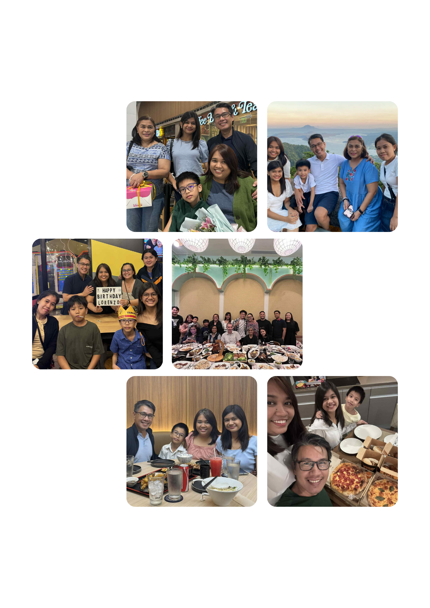

Having a huge family definitely has its cons and pros, but I would say more pros. I get to share my thoughts and feelings to my titas and titos, get advice from my lolos and lolas, and have fun with my cousins. Being the only niece definitely sucks, but, atleast I'm not alone.

My number 1 supporter and first friend, I'm glad to have my mother in life. She always helps me whenever I can, especially in Math-related school works, or whenever I need help in general. She takes care of me and my health, physically and mentally, making sure I can still stand.

My ever so wise and hard-working Dad, I'm glad to have him as my dad because he always reminds me to never give up. Whenever something gets difficult, he tells me to breathe and think, so I probably would be lost without him.

With a year gap, my brother may be small, but he has a big heart. He's my grandest cheerleader, and even though he is stubborn at times, I do love him.

My grandmother, or whom I call "Bowa" always supports me and my passions or hobbies. Always pushing me to my limits and comfort zone, testing me to try out new things. And even though it's overwhelming at times, I know she just wants the best for me.

She's my yaya, but, I consider her as my ate. For me, she is family to me, whether by blood or not. She took care of me since I was little, and one of my funniest, shortest, but most loving family members.

Another not by blood family member, but Bowa Mary has been in the family for around 12 years. Taking care of my Bowa, to my mom, and then to me and my brother. The family is so lucky to have her.

For me, my most memorable experience with my family is when my baby brother was born. I may be young at that time, but I understood almost everything. I made a letter for Enzo, and when I got to hold him, I knew I had a new responsiblity. Another close experience to my heart is whenevr Christmas hits. The whole family gathers, eats, cooks, play games, and does karaoke. It's so fun, and I'm thankful for the Christmas spirit. And lastly, when I went to Singapore with my family. I got to experience new culture, amazing aquariums, extremely hot climate, but also the respectful and amazing community of the country of the Merlion..
A bonus video of me and my family when we travelled to Singapore ^^